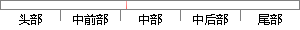

一个任务，也称作一个线程，是一段简单的程序，该程序可以任务CPU完全只属于该程序自己。
片段位置图

相似结果
相似片段：3)任务一个任务,也称作一个线程,是一个简单的程序。该程序可以认为CPU完全只属于该程序自己。实时应用程序的设计过程,包括如何把问题分成多个任务,每个任务都是...
| 标题 | 《新型智能电熔焊机控制系统设计》 |
| 对比库 | 中国学位论文全文数据库 |
| 作者 | 李分秋 |
| 机构 | 浙江大学 |
| 分类 | 电力系统及其自动化 |
| 年份 | 2006 |
| 相似率 | 84.85% （严重抄袭） |
※ 片段修改建议 ※
近似词参考：- 自己：本身
- 任务：使命 义务
- 完全：彻底 完整
- 程序：法式 步伐
- 简单：简略 简朴
系统自动生成语句： 一个使命，也称作一个线程，是一段简略的法式，该法式可以使命CPU彻底只属于该法式本身。
注：本片段修改建议为系统自动生成，仅供参考。